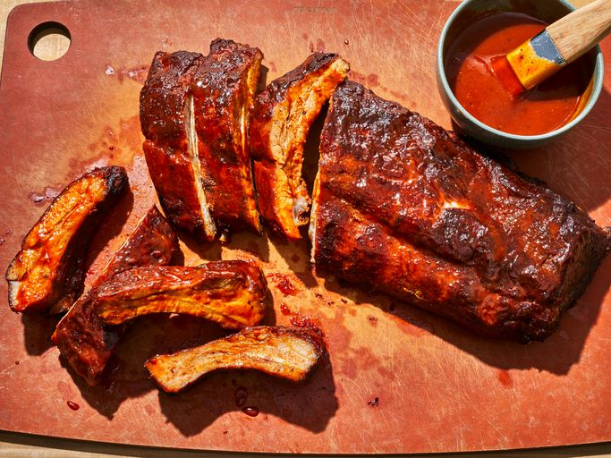

Oven-Baked Baby Back Ribs

Description
These oven-baked baby back ribs are seasoned with a homemade dry rub, then glazed with barbeque sauce and baked until tender and delicious.
If you're in the mood for a little virtual trip into summer, give this technique a try. It works with literally any dry rub and barbecue sauce combo.
Ingredients
- Ancho Chile Powder
- White Sugar
- Brown Sugar
- Salt
- Freshly Ground Black Pepper
- Ground Cumin
- Dry Mustard
- Ground Cayenne Pepper
- Ground Dried Chipotle Pepper
- Baby Back Pork Ribs
- Barbeque Sauce
Steps
- Gather ingredients and preheat the oven to 250 degrees F (120 degrees C).
- Mix ancho chile powder, white and brown sugars, salt, black pepper, cumin, dry mustard, cayenne, and chipotle pepper in a small bowl until combined.
- Place rib rack, meat-side down, on heavy-duty aluminum foil. Prick back of the rack several times with a knife. Generously apply a coating of dry rub to all sides of the rack. Store any remaining dry rub in an airtight container for future use.
- With the meat facing down, fold foil around the rack to create a tight seal. Transfer to a sheet pan.
- Bake in the preheated oven until tender and cooked through, about 2 hours. Remove and cool 15 minutes.
- Increase oven temperature to 350 degrees F (175 degrees C).
- Open foil, drain and discard any accumulated juices and fat. Brush barbeque sauce on all sides of the rack.
- Turn the rack on the foil so the meat is facing up. Return to the oven, leaving the foil open and bake for 10 minutes. Remove from the oven and brush another layer of barbeque sauce on the meat side only. Repeat baking and brushing with sauce 4 more times, for a total of 50 minutes baking time.
- Cut rack into individual rib segments and serve with more barbeque sauce.